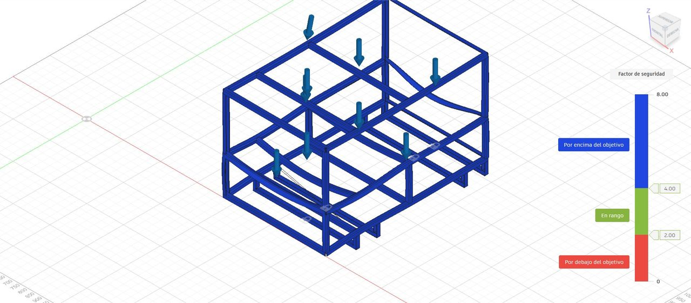

Limpieza autónoma
Canchas de hockey sobre césped de agua.
Vista lateral
Un cuarto de cancha en 1 hora, en franjas de 75 cm, sin operador.
Una muestra del interior
El tanque de agua limpia de 150 L trabaja en conjunto con los dos tanques de 25 L a sus lados.
Despiece
El chasis reúne todos los componentes y asegura un lugar sólido para su óptimo funcionamiento.
Recorrido
Aspersores, rodillos, ruedas y aspiradora. La franja queda limpia detrás de la máquina.
Mercado
Proceso
Elige un sistema para verlo en detalle.
Recirculación
El tanque limpio de 150 L va en el centro, con el de aspiración a un costado y el intermedio al otro. Bajá para seguir el recorrido.
Aspiración
El motor de aspiración levanta el agua sucia y el alga detrás de los rodillos.
Filtrado
El agua va del tanque de aspiración al filtro, en el frente de la máquina, y luego al tanque intermedio de 25 L.
Retorno
Del intermedio pasa por adelante de los tanques a la bomba de 12 V, al lado de la de 24 V, y entra al tanque limpio de 150 L.
Aspersión
La bomba de 24 V alimenta los aspersores y el ciclo comienza de nuevo, reutilizando el agua para quitar la suciedad y el alga de la cancha.
Resultado
Arrastrá el divisor. A la derecha, fibra con alga y suciedad; a la izquierda, la franja que dejó Turfo.
Ilustración, no fotografía.
Agua
El agua sucia no se descarta: pasa por el tanque de aspiración, el filtro y el intermedio, y vuelve al tanque limpio.
Cobertura
Cancha FIH de 91,4 × 55 m. Un cuarto de cancha son 1.257 m² (22,85 × 55 m): 34 pasadas de 55 m, de lateral a lateral, con rodillos de 75 cm y un 10 % de superposición entre pasadas (67,5 cm útiles por pasada).
Para cumplir 1 h hace falta avanzar a 0,52 m/s (31 m/min) como mínimo: 34 × 55 m = 1.870 m de recorrido. El cálculo ya incluye la superposición, pero no los 33 giros entre pasadas, que suben esa cifra.
Análisis estructural · FEA
Estudio de tensión estática en Fusion 360 con los tanques llenos y el panel superior cargados: 2.480 N en total, unos 253 kg.

Mallas parabólicas: 442.800 nodos en la chapa, 303.493 en los tubos. Acero genérico, E = 210.000 MPa.
Costos industriales
Lote de 200 unidades por año. Pesos y materiales salen de los planos finales; los precios de componentes, la mano de obra y los herramentales son estimaciones del equipo.
La batería es de la máquina final; el prototipo funciona enchufado.
Los tanques de la máquina final son de inoxidable AISI 304 y concentran la materia prima. El prototipo usa tanques estándar de motorhome.
14,84 h de fabricación por máquina, a $ 7.800/h más 40 % de cargas sociales: $ 10.920/h. El costo indirecto se calcula como 600 % de la MOD: $ 971.989.
Jig de soldadura del chasis ($ 420.000), matriz de plegado ($ 260.000), utillaje de torneado ($ 140.000) y programa CAM de corte láser ($ 95.000), repartidos en 200 máquinas.
Terminaciones que no hace el equipo: pintura al horno del chasis ($ 38.000), epoxy del carro de cepillos ($ 22.000) y pintura en polvo de la unión al chasis ($ 15.000).
Con 200 u/año hacen falta 1,4 operarios: se pagan 2 (352 h/mes) y se usan 247 h. Con los mismos 2 operarios se pueden hacer hasta 284 u/año.
Valores en pesos argentinos por unidad, del análisis de costos G15 corregido (Tecnología Industrial IV, FADU-UBA). Incluye las 17 chapas de la carcasa.
Ficha técnica